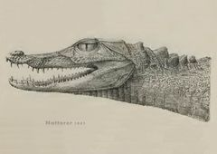
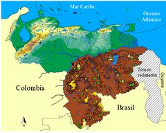

Paleosuchus trigonatus
| Babo negro | |
|---|---|
|  | |
| Riesgo de extinción | |
Datos insuficientes (UICN) | |
| Clasificación científica | |
| Reino: | Animalia |
| Filo: | Chordata |
| Clase: | Reptilia |
| Orden: | Crocodilia |
| Familia: | Alligatoridae |
| Género: | ''Paleosuchus'' |
| Especie: | 'P. trigonatus' |
| Nombre binomial | |
|
'Paleosuchus trigonatus' (Schneider 1801) | |
| Distribución | |
|
 Área de distribución de Paleosuchus trigonatus en Venezuela. Los puntos verdes indican las localidades donde se ha colectado u observado a la especie | |
Contenido
Taxonomía
Nombres comunes
Babo negro baba enana, cachirre (Colombia), yadiwes lengua yekuana), dwarf caiman, Schneider’s dwarf caiman, Schneider’s smooth fronted caiman.
Notas taxonómicas
El holotipo de esta especie se suponía perdido (Medem 1967), pero en la actualidad parece claro que éste se encuentra en Zoologisches Museum Berlín (Magnusson 1992, King y Burke 1997, Ross 2012). El nombre específico, de acuerdo a la interpretación que hace Magnusson (1992) de parte de la descripción original en Schneider, deriva de tres (tres) y gonia (ángulo) lo cual haría referencia a la forma triangular de las prominentes escamas dorsales en un dibujo de Albertus Seba (1734).
Sinónimos
Crocodilus trigonatus, Schneider 1801; Crocodilus (Alligator) trigonatus, Merrem 1820; Champsa trigonata, Wagler 1830; Caiman trigonatus, Gray 1844; Caiman (Paleosuchus) trigonatus, Gray 1862; Caiman trigonatus, Boulenger 1889; Jacaretinga trigonatus, Vaillant 1898; Paleosuchus trigonatus, Schmidt 1928. Ver más detalles en Medem 1967 y Magnusson 1992 y en [https://reptile-database.reptarium.cz/species?genus=Paleosuchus&species=trigonatus&search_param=%28%28search%3D%27crocod%27%29%29]
Descripción
Paleosuchus trigonatus es un aligatórido pequeño, con longitudes máximas reportadas de 2,26 y 2,20 m de LT (Medem 1967, 1981; Magnusson 1992). Los machos generalmente no exceden 1,70 m y las hembras raramente miden más de 1,40 m (Magnusson 1992). Como todos los Aligatóridos, P. trigonatus carece de Organos Sensoriales inter-tegumentarios (OSI) en el vientre y sus dientes se disponen de manera que los de la mandíbula superior son los únicos que se observan cuando los individuos tienen el hocico cerrado. Se distinguen fácilmente de las babas por su coloración más oscura (por lo que se les da en ocasiones el nombre de “babos negros”) y por la ausencia de borde transversal anterior a los ojos, entre las órbitas oculares. Poseen además un gran desarrollo de los osteodermos en todo el cuerpo y sus escamas dorsales, particularmente las de la nuca (o cervicales), son muy prominentes y de bordes muy rígidos y filosos. La sumatoria de escamas en las cuatro primeras filas nucales (cervicales) no es superior a nueve. Al menos una fila de escamas dorsales en la región lumbar-sacra posee sólo dos escamas. Otro rasgo muy distintivo en P. trigonatus es la presencia de una franja más oscura a lo largo de la parte media del hocico, la cual no está en P. palpebrosus. El par de orificios o ventanas (fenestraes) supratemporales, en la tabla craneal, están muy reducidos o completamente cerrados (obliterados) en los ejemplares adultos, aunque en estos últimos las marcas de su ubicación original son todavía reconocibles. El babo negro habita principalmente en ríos y riachuelos en zonas boscosas. Se encuentra principalmente en ríos de aguas claras y aguas negras pobres en nutrimentos (Gorzula y col. 1987). Magnusson y Lima (1991) señalaron un inicio de la edad reproductiva de 11 años para las hembras y de 20 años para los machos de P. trigonatus. La especie construye nido de montículo con material vegetal y lodo, de manera similar a la baba. A partir de los escasos datos provenientes de toda el área de distribución de la especie, se ha determinado que el número de huevos promedio por nidada es bajo (15,1 huevos/nido), lo que se corresponde con su pequeño tamaño (Thorbjarnarson 1996), pero existe un solo registro de nido para Venezuela (Valeris 2013b).
Distribución
El babo negro se localiza en las cuencas del Orinoco y del Amazonas, así como en los ríos que drenan hacia el Atlántico entre los grandes sistemas fluviales mencionados. De acuerdo con las localidades reportadas de individuos conservados en museos, la especie se localiza en Venezuela sólo a la margen derecha del Orinoco (Seijas 2007). Un registro señalado por Godshalk (1982) para el río Cinaruco, no cuenta con ejemplares de referencia en museos, ya que este autor perdió los ejemplares colectados, por lo que no es posible determinar si se trató de un caso de identificación errónea (confundido con P. palpebrosus). En un par de breves visitas al Cinaruco el 16 de junio de 2001 y 18 de enero de 2002, se constató la presencia de P. palpebrosus, pero no la de P. trigonatus (Seijas 2011). Aunque las especies de Paleosuchus son simpátricas en la mayor parte de su área de distribución, el mapeo de las localidades conocidas sugiere un patrón de separación altitudinal en el cual P. palpebrosus parece estar localizado con más frecuencia en tierras más bajas que P. trigonatus. Tal como lo discutieron Gorzula y Paolillo (1986), varios de los registros de esta última especie corresponden a localidades por encima de 800 m.s.n.m y de aguas más frías (Gorzula et al. 1986). De esto se desprende, que P. trigonatus tiende a ocupar, o es más abundante, en ríos de menor orden que P. palpebrosus. Estas observaciones, sin embargo, contradicen las de Campos y Magnusson (2013) quienes señalan que P. palpebrosus se encuentra a mayores elevaciones que las otras especies de Crocodilia con que son simpátricas.Situación
'Lista Roja Venezuela' Datos Insuficientes (DD).
'Lista Roja internacional' Preocupación Menor (LC).
Amenazas
La información sobre el estado poblacional de P. trigonatus en Venezuela es muy escasa, pero el hecho de que habite en zonas por lo general con poca población humana, hace suponer que la especie no está amenazada de manera inminente. Se les asignó la categoría “Datos insuficientes” (DD) en Libro Rojo de la Fauna venezolana (Rodríguez y Rojas-Suárez 2008), la cual se mantiene en esta ficha. Los autores mencionados señalan que la destrucción de hábitat por la minería de oro y la contaminación mercurial asociada a esa actividad ha causado un impacto severo en algunas áreas al sur del Orinoco. La cacería de subsistencia por parte de las comunidades indígenas pudiera ser un factor de amenaza en algunas localidades (Rodríguez y Rojas-Suárez 1995).
Conservación
Aun cuando se puede considerar que las amenazas sobre las poblaciones de P. trigonatus son escasas, hay que tener en cuenta que existe un vacío de información muy grande, el cual debería ser llenado de manera progresiva en los próximos años. Los estudios sobre el estado poblacional de la especie, así como el impacto local de las actividades mineras y de la cacería de subsistencia son claves para establecer si existe algún grado de amenaza sobre la especie y para el diseño de estrategias para su conservación.
Editores y Colaboradores
Andrés E. Seijas Y., Carlos Valeris.
Referencias
Campos, Z. y Magnusson, W. E. (2013). Thermal relations of dwarf caiman, Paleosuchus palpebrosus, in a hill side stream: Evidence for an unusual thermal niche among crocodilians. J Therm Biol 38(2013): 20-23.
Godshalk, R. (1982). The habitat and distribution of Paleosuchus in Venezuela. Pp. 31-38 en: Crocodiles. Proceedings of the 5th Working Meeting of the Crocodile Specialist Group. IUCN - The World Conservation Union, Gland, Switzerland and Cambridge, UK.
Gorzula, S. y Paolillo, A. (1986). La Ecología y el estado actual de los Aligatóridos de la Guayana venezolana. Pp. 37-54 en: Crocodiles. Proceedings of the 7th Working Meeting of Crocodile Specialist Group IUCN - The World Conservation Union, Gland, Switzerland and Cambridge, UK.
Gorzula, S., Paolini, J. y Thorbjarnarson, J. (1987). Some Hydrochemical and hydrological characteristics of crocodilian habitats. Tropical Freshwater Biology (0795-0101/87).
King, F. W. y Burke, L. (1989). Crocodilian, tuatara and turtle species of the world. A taxonomic and geographic reference. Washington, D. C.: Association of Systematic Collections.
Magnusson, W. (1992). Paleosuchus trigonatus. Catalogue of American Amphibians and Reptiles 555: 1-3.
Magnusson, W. y Lima, A. (1991). The ecology of a cryptic predator, Paleosuchus trigonatus, in a tropical rainforest. J Herpetol 25(1): 660-666.
Medem, F. (1967). El género "Paleosuchus" en Amazonia. Atas do Simposio sobre a Biota Amazonica: 141-162.
Medem, F. (1981). Los Crocodylia de Sur América. Los Crocodylia de Colombia. Bogotá, Colombia: COLCIENCIAS.
Rodríguez, J. P. y Rojas-Suárez, F. (1995). Libro Rojo de la fauna Venezolana. Caracas: Ex Libris.
Rodríguez, J. P. y Rojas-Suárez, F. (2008). Libro Rojo de la fauna Venezolana. (3ra edición). Caracas: Provita y Shell de Venezuela. S.A. Caracas. 364 pp.
Ross, F. D. (2012). Cutting a type into pieces. CSG Newsletter 31(1): 22-23.
Seijas, A. E. (2007 ("2006")). Características distintivas y estado del conocimiento de las especies del género Paleosuchus (Crocodylidae; Alligatoridae) en Venezuela. Mem Soc Cienc Nat La Salle 166: 27-44.
Seijas, A. E. (2011). Los Crocodylia de Venezuela: Ecología y Conservación. Caracas: Academia de Ciencias Físicas, Matemáticas y Naturales.
Thorbjarnarson, J. B. (1996). Reproductive characteristics of the order crocodylia. Herpetologica 52: 8-24.
Valeris, C. (2013). Abundancia y registros de Paleosuchus trigonatus (Crocodilia: Alligatoridae) en la cuenca del rio Ka’kada, Erebato medio,Venezuela. En: X Congreso Venezolano de Ecología. 18-22 noviembre 2013. Mérida, Venezuela.
Valeris, C. (2013). Primer registro de anidación de Paleosuchus trigonatus (Crocodilia: Alligatoridae) para Venezuela. En: X Congreso Venezolano de Ecología. 18-22 noviembre 2013. Mérida, Venezuela.